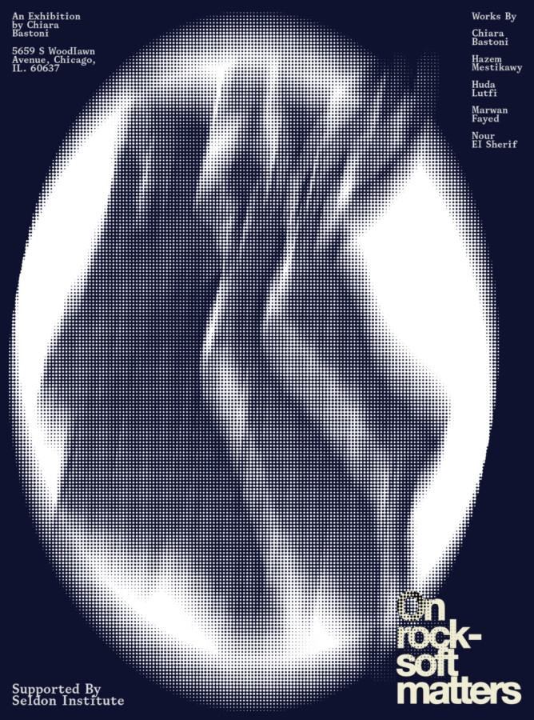

On Rock-Soft Matters
An immersive exhibition by Italian visual artist and curator Chiara Bastoni featuring her photography and 2026 film A Sun In The Palm, alongside a selection of over one hundred visual works by Egyptian artists: Hazem El Mestikawy, Huda Lutfi, Marwan Fayed, and Nour El Sherif. This exhibition is a journey.
A space to enter slowly, to pause, to feel.
It invites you to see and resonate with the spiritual life within Islam in a new way through intimacy, emotion, and beauty.
The exhibition and film are the result of a one year artistic and curatorial research project into Islamic ritual, engaging contemporary art within an Egyptian context.
The exhibition unfolds as a quiet, immersive journey centered on subtlety, silence, and intimate exchange. You’re encouraged to visit with someone close to you and move through it slowly, sharing a moment of stillness and empathy — or to come alone and step away from daily noise.